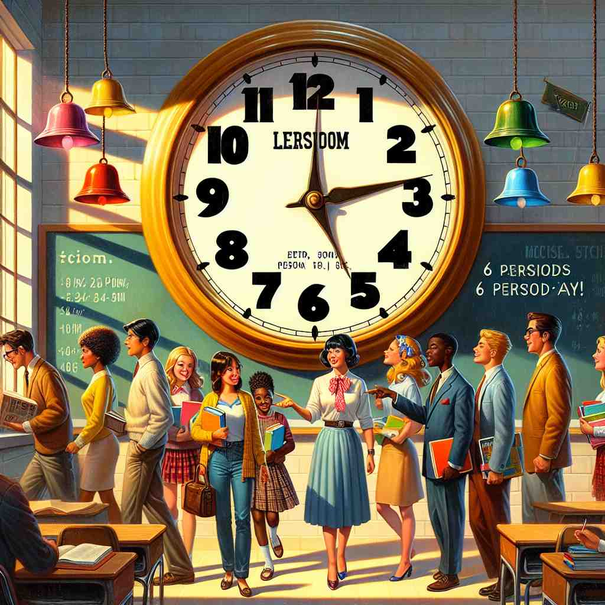

💬 The students are excited for their next class period. 学生们对即将到来的课程感到兴奋。

💬 The exhibit shows the period of dinosaurs that lived 56 million years ago. 展览展示了5600万年前生活在地球上的恐龙时期。
💬 The students are excited for their next class period. 学生们对即将到来的课程感到兴奋。
💬 The exhibit shows the period of dinosaurs that lived 56 million years ago. 展览展示了5600万年前生活在地球上的恐龙时期。
🔈 ['pɪərɪəd]
💬 The school day is divided into several periods. 学校的一天被分成几个时间段。
🔍 时间段: 就像你早上 8 点到 12 点在学校上课，这段时间就是一个“period”，也就是上课的时间段。下午 1 点到 4 点又是一个“period”，是下午上课的时间段。就像你一天吃饭分成好几次，早餐是一个时间段，午餐是一个时间段，晚餐是一个时间段。
💬 The Renaissance was a period of great artistic achievement. 文艺复兴时期是一个艺术成就辉煌的时期。
🔍 时期: 文艺复兴时期持续了很长时间，从14世纪到17世纪，在这段时间里，出现了很多伟大的艺术家和艺术作品。就像你一年级到六年级，小学的这段时间就是你的小学时期。
💬 There was a long period of silence after his question. 在他提问之后有一段很长时间的沉默。
🔍 一段时间: 他问完问题后，大家都没有说话，过了好一会儿才有人回答。这段安静的时间就是一个“period”，也就是一段时间。就像你搭积木，搭了很久才搭好，这段搭积木的时间也是一个 period。
💬 Put a period at the end of the sentence. 在句子的末尾加上一个句号。
🔍 句号: 就像你写完一句话，要在最后面加一个“。”，这个小点就是一个“period”，也就是句号。它表示一句话说完了。
💬 Many women experience a period every month. 许多女性每个月都会经历一次月经。
🔍 月经: 成年女性每个月都会有一段时间身体会有一些变化，比如肚子会不舒服，这叫做月经，这个“period”指的是女性的生理期。就像小狗每个一段时间会脱毛一样，这是一个周期性的变化。
🧠 “period” 的核心意思是“一段时间”或“一个阶段”，可以指具体的一段时间，例如上课的时间段，也可以指历史上的一段时期，例如文艺复兴时期，还可以指一段沉默的时间。另外，它也可以指句号或女性的月经周期。
⬅️ time（时间）、age（时代）、stage（阶段）、dot（点）
🔀 instant（瞬间）、eternity（永恒）
🌳 词根来自希腊语 'peri-' (周围) 和 'hodos' (道路)，意指一个循环或完整的时间段。在不同语境中，可能表示句号、时期、月经周期等。
💡 可以将 'period' 联想为一个完整的 '周期' 或 '环绕'。以 'peri-' 开头的词通常涉及'周围'或'循环'的概念，这有助于记忆它与时间段相关的意义。
🗝️ n. a punctuation mark (.) used at the end of a sentence 句末使用的标点符号（.）
🎭 在一个写作课上，老师提示大家注意句子的结束标点。她指着黑板上的一句话，说：'记得在句末加上一个period。' 接着在句子后面画了一个点，这清楚地展示了'period'作为句号的用法。
💬 Don't forget to put a period at the end of your sentence. 别忘了在句子的末尾加上句号。
🤔 标志着一段文字的结束，类似于一段时间的结束
🗝️ n. a woman's monthly menstrual flow 女性每月的月经流量
🎭 在一个女性健康讲座上，讲师正在解释生理周期。她说：'女性每个月都会经历一次period，这是生育健康的重要组成部分。' 听众们认真点头，理解了'period'在这里的特殊含义。
💬 Her period usually lasts for about five days. 她的月经通常持续大约五天。
🤔 女性周期性经历的一段时间
🗝️ n. a lesson in school 学校中的一节课
🎭 在一所中学，广播通知响起：'第二节period将开始，请同学们迅速移动到下一个教室。' 学生们起身，带着书本前往下一个课程，这个场景展示了'period'作为课时的含义。
💬 We have four periods of math each week. 我们每周有四节数学课。
🤔 学校中固定的一段上课时间
🗝️ interj. to end (used as an emphatic way to end a discussion) 结束（用作结束讨论的强调方式）
🎭 在一次家庭讨论中，父亲说：'今晚没有冰淇淋，period.' 他的语气坚定，家庭其他成员明白了讨论已经结束。'period'作为强调结束的用法在这个场景中得到了体现。
💬 I don't want to hear any more excuses. Period. 我不想再听任何借口。就这样。
🤔 表示结束一段对话，类似于时间段的终止
🗝️ adj. occurring at regular intervals 定期发生
🎭 在一个科学实验室中，研究员观察着监测数据。他注意到：'这个现象每隔十分钟periodically发生一次。' 这清楚展示了'period'用来形容周期性现象的概念。
💬 The periodic table organizes elements based on their properties. 元素周期表根据元素的性质对其进行分类。
🤔 描述按固定时间周期发生的事物